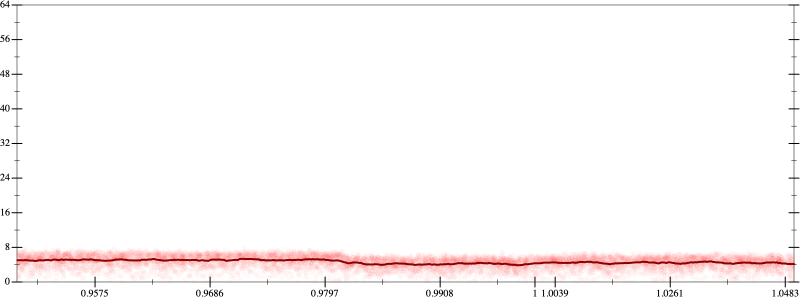
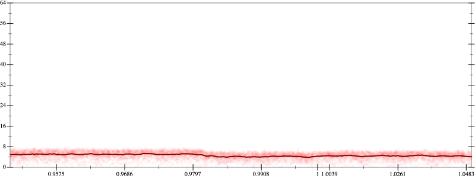

Initial program 4.6
\[\left(\left(\left(\left(\left(\left(\left(1.0 + -8.0 \cdot x\right) + 14.0 \cdot \left(x \cdot x\right)\right) + -9.333333 \cdot \left(\left(x \cdot x\right) \cdot x\right)\right) + 2.916667 \cdot \left(\left(\left(x \cdot x\right) \cdot x\right) \cdot x\right)\right) + -0.466667 \cdot \left(\left(\left(\left(x \cdot x\right) \cdot x\right) \cdot x\right) \cdot x\right)\right) + 0.038889 \cdot \left(\left(\left(\left(\left(x \cdot x\right) \cdot x\right) \cdot x\right) \cdot x\right) \cdot x\right)\right) + -0.001587 \cdot \left(\left(\left(\left(\left(\left(x \cdot x\right) \cdot x\right) \cdot x\right) \cdot x\right) \cdot x\right) \cdot x\right)\right) + 2.5 \cdot 10^{-05} \cdot \left(\left(\left(\left(\left(\left(\left(x \cdot x\right) \cdot x\right) \cdot x\right) \cdot x\right) \cdot x\right) \cdot x\right) \cdot x\right)\]
Applied simplify4.5
\[\leadsto \color{blue}{\left({\left(x \cdot x\right)}^{3} \cdot \left(2.5 \cdot 10^{-05} \cdot \left(x \cdot x\right)\right) + {\left(x \cdot x\right)}^{3} \cdot \left(-0.001587 \cdot x + 0.038889\right)\right) + \left(\left(\left(x \cdot x\right) \cdot \left(-9.333333 \cdot x + 14.0\right) + \left(\left(x \cdot x\right) \cdot \left(x \cdot x\right)\right) \cdot \left(2.916667 + -0.466667 \cdot x\right)\right) + \left(x \cdot -8.0 + 1.0\right)\right)}\]
- Using strategy
rm Applied add-log-exp4.5
\[\leadsto \left({\left(x \cdot x\right)}^{3} \cdot \left(2.5 \cdot 10^{-05} \cdot \left(x \cdot x\right)\right) + {\left(x \cdot x\right)}^{3} \cdot \left(-0.001587 \cdot x + 0.038889\right)\right) + \left(\left(\left(x \cdot x\right) \cdot \left(-9.333333 \cdot x + 14.0\right) + \left(\left(x \cdot x\right) \cdot \left(x \cdot x\right)\right) \cdot \left(2.916667 + -0.466667 \cdot x\right)\right) + \color{blue}{\log \left(e^{x \cdot -8.0 + 1.0}\right)}\right)\]
Applied add-log-exp4.5
\[\leadsto \left({\left(x \cdot x\right)}^{3} \cdot \left(2.5 \cdot 10^{-05} \cdot \left(x \cdot x\right)\right) + {\left(x \cdot x\right)}^{3} \cdot \left(-0.001587 \cdot x + 0.038889\right)\right) + \left(\left(\left(x \cdot x\right) \cdot \left(-9.333333 \cdot x + 14.0\right) + \color{blue}{\log \left(e^{\left(\left(x \cdot x\right) \cdot \left(x \cdot x\right)\right) \cdot \left(2.916667 + -0.466667 \cdot x\right)}\right)}\right) + \log \left(e^{x \cdot -8.0 + 1.0}\right)\right)\]
Applied add-log-exp4.5
\[\leadsto \left({\left(x \cdot x\right)}^{3} \cdot \left(2.5 \cdot 10^{-05} \cdot \left(x \cdot x\right)\right) + {\left(x \cdot x\right)}^{3} \cdot \left(-0.001587 \cdot x + 0.038889\right)\right) + \left(\left(\color{blue}{\log \left(e^{\left(x \cdot x\right) \cdot \left(-9.333333 \cdot x + 14.0\right)}\right)} + \log \left(e^{\left(\left(x \cdot x\right) \cdot \left(x \cdot x\right)\right) \cdot \left(2.916667 + -0.466667 \cdot x\right)}\right)\right) + \log \left(e^{x \cdot -8.0 + 1.0}\right)\right)\]
Applied sum-log4.5
\[\leadsto \left({\left(x \cdot x\right)}^{3} \cdot \left(2.5 \cdot 10^{-05} \cdot \left(x \cdot x\right)\right) + {\left(x \cdot x\right)}^{3} \cdot \left(-0.001587 \cdot x + 0.038889\right)\right) + \left(\color{blue}{\log \left(e^{\left(x \cdot x\right) \cdot \left(-9.333333 \cdot x + 14.0\right)} \cdot e^{\left(\left(x \cdot x\right) \cdot \left(x \cdot x\right)\right) \cdot \left(2.916667 + -0.466667 \cdot x\right)}\right)} + \log \left(e^{x \cdot -8.0 + 1.0}\right)\right)\]
Applied sum-log4.4
\[\leadsto \left({\left(x \cdot x\right)}^{3} \cdot \left(2.5 \cdot 10^{-05} \cdot \left(x \cdot x\right)\right) + {\left(x \cdot x\right)}^{3} \cdot \left(-0.001587 \cdot x + 0.038889\right)\right) + \color{blue}{\log \left(\left(e^{\left(x \cdot x\right) \cdot \left(-9.333333 \cdot x + 14.0\right)} \cdot e^{\left(\left(x \cdot x\right) \cdot \left(x \cdot x\right)\right) \cdot \left(2.916667 + -0.466667 \cdot x\right)}\right) \cdot e^{x \cdot -8.0 + 1.0}\right)}\]
Applied simplify4.3
\[\leadsto \left({\left(x \cdot x\right)}^{3} \cdot \left(2.5 \cdot 10^{-05} \cdot \left(x \cdot x\right)\right) + {\left(x \cdot x\right)}^{3} \cdot \left(-0.001587 \cdot x + 0.038889\right)\right) + \log \color{blue}{\left({\left({\left(e^{x}\right)}^{\left({x}^{3}\right)}\right)}^{\left(x \cdot -0.466667 + 2.916667\right)} \cdot \left(e^{1.0 + -8.0 \cdot x} \cdot {\left(e^{x \cdot x}\right)}^{\left(x \cdot -9.333333 + 14.0\right)}\right)\right)}\]
- Using strategy
rm Applied add-sqr-sqrt4.4
\[\leadsto \left({\left(x \cdot x\right)}^{3} \cdot \left(2.5 \cdot 10^{-05} \cdot \left(x \cdot x\right)\right) + {\left(x \cdot x\right)}^{3} \cdot \left(-0.001587 \cdot x + 0.038889\right)\right) + \log \left({\left({\left(e^{x}\right)}^{\left({x}^{3}\right)}\right)}^{\color{blue}{\left(\sqrt{x \cdot -0.466667 + 2.916667} \cdot \sqrt{x \cdot -0.466667 + 2.916667}\right)}} \cdot \left(e^{1.0 + -8.0 \cdot x} \cdot {\left(e^{x \cdot x}\right)}^{\left(x \cdot -9.333333 + 14.0\right)}\right)\right)\]
Applied pow-unpow4.4
\[\leadsto \left({\left(x \cdot x\right)}^{3} \cdot \left(2.5 \cdot 10^{-05} \cdot \left(x \cdot x\right)\right) + {\left(x \cdot x\right)}^{3} \cdot \left(-0.001587 \cdot x + 0.038889\right)\right) + \log \left(\color{blue}{{\left({\left({\left(e^{x}\right)}^{\left({x}^{3}\right)}\right)}^{\left(\sqrt{x \cdot -0.466667 + 2.916667}\right)}\right)}^{\left(\sqrt{x \cdot -0.466667 + 2.916667}\right)}} \cdot \left(e^{1.0 + -8.0 \cdot x} \cdot {\left(e^{x \cdot x}\right)}^{\left(x \cdot -9.333333 + 14.0\right)}\right)\right)\]
- Using strategy
rm Applied unpow34.4
\[\leadsto \left({\left(x \cdot x\right)}^{3} \cdot \left(2.5 \cdot 10^{-05} \cdot \left(x \cdot x\right)\right) + \color{blue}{\left(\left(\left(x \cdot x\right) \cdot \left(x \cdot x\right)\right) \cdot \left(x \cdot x\right)\right)} \cdot \left(-0.001587 \cdot x + 0.038889\right)\right) + \log \left({\left({\left({\left(e^{x}\right)}^{\left({x}^{3}\right)}\right)}^{\left(\sqrt{x \cdot -0.466667 + 2.916667}\right)}\right)}^{\left(\sqrt{x \cdot -0.466667 + 2.916667}\right)} \cdot \left(e^{1.0 + -8.0 \cdot x} \cdot {\left(e^{x \cdot x}\right)}^{\left(x \cdot -9.333333 + 14.0\right)}\right)\right)\]
 
